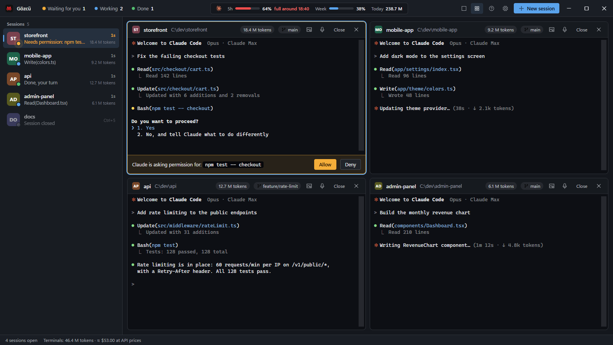

Status at a glance
Blue is working, amber is waiting for you, green is done. The session that needs you rises to the top.
 For Claude Code on Windows
For Claude Code on Windows
Gözcü runs all your Claude Code terminals in one window, lights up the one that's waiting, and lets you approve Claude's requests from your phone.
The installer isn't code-signed yet, so Windows SmartScreen will probably warn you. Click More info, then Run anyway.
Uses your own Claude subscription · Never touches your Claude settings · Data stays on your PC
Everything you need to run five Claude Code sessions without babysitting them.
Blue is working, amber is waiting for you, green is done. The session that needs you rises to the top.
Get pinged the moment Claude asks for permission or finishes. Click the notification to jump straight to that terminal.
Away from the desk? Allow or deny Claude's request right from the notification. Each button works once, for that request only.
Your 5-hour and weekly Claude limits in the title bar, plus a forecast of when you'll hit them at your current pace.
A usage report by day, project, hour and model, subagents included. Read straight from Claude's own logs on your PC.
Drag sessions into a grid and watch up to six terminals at once. Grab a window by its title bar to swap it with another.
Every terminal shows its own token count, what it would cost at API prices and how full the context is. On Pro or Max you don't pay that amount; it shows you which session is the heavy one.
The mic button opens Windows voice typing and what you say lands in the focused terminal. Paste screenshots with Ctrl+V or drop a file on the terminal.
The interface, Windows notifications and phone notifications follow the language you choose, or Windows' own.
Reminders · works with Obsidian
Gözcü reads the reminders note in your Obsidian vault, or any folder of Markdown notes. The bell in the title bar counts what's overdue and what's due today.
[ ] to [x] on that one line. Nothing else in your notes is written.Reads date headings like ## 2026-10-26, tasks with a 📅 due date and your daily notes.
Native Windows 11 look, Claude Code's own terminal, nothing in between.

A small Windows installer. The welcome tour checks that Claude Code is installed.
Gözcü opens Claude Code in each one, signed in with your own account.
Gözcü watches every session and tells you the moment one needs you.
No subscription. You already pay for Claude; Gözcü shouldn't be another monthly bill.
$0
$6.99 one-time
Secure checkout by Polar. Your license key arrives by email.
Not for you? Full refund within 14 days. How refunds work
Gözcü has no account, no analytics and no server of its own. Here is exactly what it touches.
Usage reports are read from Claude Code's own log files, reminders from your notes folder. By default nothing leaves your PC, and there's no telemetry.
Each session reports its status to a small server inside Gözcü that listens on 127.0.0.1 only and checks a random key created at every launch.
Gözcü never edits your global Claude settings, hooks or CLAUDE.md. Its hooks live in a separate settings file passed only to the sessions Gözcü starts.
They're off until you turn them on and go through ntfy (ntfy.sh, or your own server). Only the project name and status are sent, plus the command if you enable phone approvals. Reminder summaries reach your phone only if you switch that on separately.
With a Pro key, Gözcü sends the key and your computer's name to Polar to activate it, then checks it once a day. Offline, Pro keeps working for 14 days. The free version doesn't contact Polar.
Gözcü runs the Claude Code already installed on your PC, signed in with your own account. Your prompts go from Claude Code to Anthropic as they always do, not through Gözcü.
The only places Gözcü connects to on the internet: Polar, if you've entered a license key, and your ntfy server, if phone notifications are on.
If Gözcü Pro isn't right for you, email jantecreative@gmail.com within 14 days of purchase from the address you bought with. You get a full refund through Polar, our payment provider, to your original payment method. The license key stops working after the refund.
No. Gözcü opens the Claude Code already installed on your PC, signed in with your own Claude subscription. It never calls an AI itself.
No. Status tracking uses a temporary settings file passed only to the sessions Gözcü starts. Your global Claude settings, hooks and CLAUDE.md stay exactly as they are.
Gözcü uses ntfy, a free open-source notification app: scan a QR code and you're paired, no account needed. Only the project name and status are sent; with phone approvals on, the command Claude wants to run is included so you can see what you're allowing. Each Allow/Deny button carries a one-time code that expires after 10 minutes and only works for that request.
Not yet. Gözcü is built for Windows first, where tools like this are missing. Mac users can tell us they're interested at the email below.
Windows 10 or 11 and Claude Code installed with a Claude Pro or Max plan (or API access).
The installer isn't code-signed yet, and SmartScreen warns about unsigned apps that haven't been downloaded much. Click "More info", then "Run anyway". The installer comes straight from this site's GitHub releases.
Windows 10 / 11 · Requires Claude Code
The installer isn't code-signed yet, so Windows SmartScreen will probably warn you. Click More info, then Run anyway.